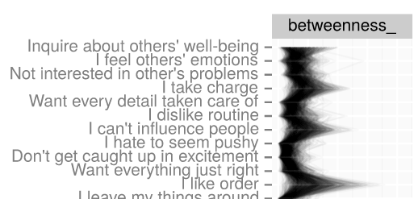

I'm a developmental social-personality cognitive neuroscientist.
- Developmental Social Neuroscience Lab (Jennifer Pfeifer)
- Personality and Social Dynamics Lab (Sanjay Srivastava)
1/11/2018
I'm a developmental social-personality cognitive neuroscientist.
Why do we observe increases in negative health risk during Adolescence?
Individual differences in tendencies of thoughts and behavior are strategies that may serve to satisfy fundamental motivations.
Can we gain insight into the causes of adolescent risk-tolerance by taking an adaptive-functional approach, focusing on motives?
The big question: Why do negative health outcomes increase in adolescence?

Focus on - Reward sensitivity - Risk tolerance - Peer influences (CITE Casey, Pfeifer, Harden, Steinberg).
Characterizing a laboratory task commonly used to investigate risk decisions.
The Stoplight Game (Steinberg et al, 2008) has been used in dozens of experiments as a measure of risk tolerance with the expectation of reward receipt
Harden et al. 2017: 398 twins, 4 factors capture variance of a wide range of cognitive control and incentive processing tasks
Reward-seeking factor loadings
IGT: Good decks 0.56 IGT: Bad decks 0.22 Delay Discounting 0.15 BART: Avg. adjusted pumps 0.47 Stoplight: intersections 0.32 Sensation seeking 0.16
78% of Stoplight unique variance: non-shared env + measurement error
The Yellow Light Game software is Customizable. This version:

N = 174, all analyses available in R package: ylglearning

Logistic regression captures the common measure of simple proportion of non-stop intersections.
ICCpGo = 0.12
This could be one explanation for the somewhat small correlations in the literature.
Structure of task behavior: is using simple bernoulli process not appropriate?


TABLE ABOUT HERE
Do people perform more optimally in either of the peer conditions?
Are indices of learning separable from indices of risk-tolerance?
My approach: How do the motivations behind "motivated adolescent behavior" change?
Many have argued that adolescent changes in reward seeking and risk tolerance may be adaptive:
Why?
Understanding function of changes in reward processing is necessary for complete description of its consequences:
Two mutually reinforcing goals:

NUMBERS ARE NOT RIGHT

For the opportunity to share this talk with you…
Bootstrapped, regularized partial-correlation networks and network statistics (using UO high-performance computing cluster)

E.g., betweenness: how many shortest routes does a node sit on?
Claims about ties between nodes strengthened by